Deploy the base function
Trong phần này, bạn sẽ deploy Lambda function có chi phí tính toán cao được viết bằng Python 3.9. Function xác định số lượng số nguyên tố trong khoảng từ 0 đến 10 triệu. Function này được thực hiện ở bài blog Lambda Graviton2.
Hãy đảm bảo bạn đang deploy function cùng region với Lambda Power Tuning Tool.
Deploy x86 Lambda Function
Đầu tiên, hãy vào Lambda Console. Ở thanh bên trái, chọn Functions, sau đó click vào nút Create function.

Ở trang Create function, hãy chọn Author from scratch. Đặt tên cho Function name là lambda-base-function. Chọn Python 3.9 ở Runtime và Architecture là x86_64. Cuối cùng là click vào nút Create function.
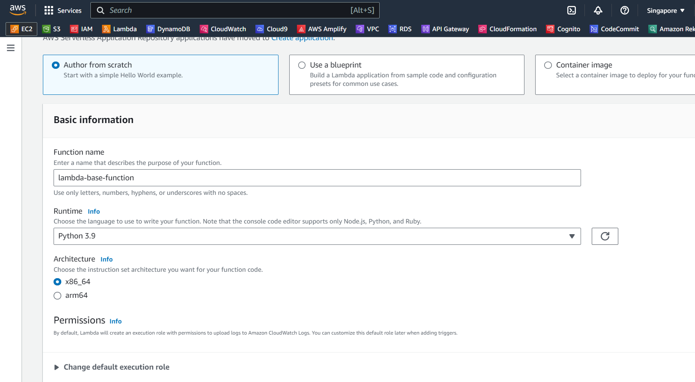
Copy đoạn code dưới đây.
import json
import math
import platform
import timeit
def primes_up_to(n):
primes = []
for i in range(2, n+1):
is_prime = True
sqrt_i = math.isqrt(i)
for p in primes:
if p > sqrt_i:
break
if i % p == 0:
is_prime = False
break
if is_prime:
primes.append(i)
return primes
def lambda_handler(event, context):
start_time = timeit.default_timer()
N = 1000000
primes = primes_up_to(N)
stop_time = timeit.default_timer()
elapsed_time = stop_time - start_time
response = {
'machine': platform.machine(),
'elapsed': elapsed_time,
'message': 'There are {} prime numbers <= {}'.format(len(primes), N)
}
return {
'statusCode': 200,
'body': json.dumps(response)
}
Python Lambda function này tính toán các số nguyên tố lên đến giới hạn N được chỉ định và đo thời gian cần thiết để thực hiện phép tính này. Cùng đi qua từng phần của đoạn code:
- Import Statements:
- json: Thư viện này cho phép làm việc với JSON data.
- math: Thư viện này cho phép làm việc với các hàm toán học.
- platform: Thư viện này cho phép truy cập vào các thông tin về hệ điều hành, máy chủ và phiên bản Python.
- timeit: Thư viện này cho phép đo thời gian thực thi của một đoạn code.
- primes_up_to function:
- Function này tính toán các số nguyên tố lên đến giới hạn n.
- Nó khởi tạo danh sách trống primes để chứa các số nguyên tốt.
- Nó lặp qua các số từ 2 đến n.
- Với mỗi số i, nó kiểm tra xem có phải số nguyên tố hay không bằng cách chia nó cho tất cả các số nguyên tố tìm được trước đó cho đén căn bậc hai của i. Nếu i chia hết cho bất kì số nguyên tố nào trong số này thì đó không phải là số nguyên tố và vòng lặp liên tục. Ngược lại, i được coi là số nguyên tố và được thêm vào danh sách primes.
- Function này sẽ trả về danh sách các số nguyên tố được tìm thấy.
- lambda_handler function:
- Đây là Lambda function chính nó sẽ thực thi khi Lambda được trigger.
- Nó sẽ đo thời gian bắt đầu thực thi của function bằng cách sử dụng timeit.default_timer().
- Nó set giá trị của N là 1000000, dùng để tìm tất cả các số nguyên tố lên đến 1000000.
- Nó gọi primes_up_to function để tìm tất cả các số nguyên tố lên đến N.
- Nó sẽ đo thời gian kết thúc thực thi của function bằng cách sử dụng timeit.default_timer().
- Nó gồm response JSON bao gồm:
- machine: loại máy hoặc môi trường hosting
- elapsed: thời gian thực thi của function
- message: số lượng số nguyên tố được tìm thấy
- Return Statement:
- Nó trả về response JSON với statusCode là 200 và body là response JSON.
- body của response bao gồm dữ liệu JSON được generate trong response dictionary.
Tóm lại, Lambda function này tính toán các số nguyên tố lên đến giới hạn N (trong trường hợp này N=1000000), đo thời gian thực thi phép tính toán và cung cấp thông tin về máy chủ. Đây là một ví dụ đơn giản sử dụng Lambda để biểu diễn tác vụ tính toán và báo cáo kết quả.
Sau khi copy đoạn code trên, vào trang lambda-base-function, paste đoạn code đó vào file lambda_function.py.

Chuyển sang mục Configuration, ở General configuration, click vào nút Edit.
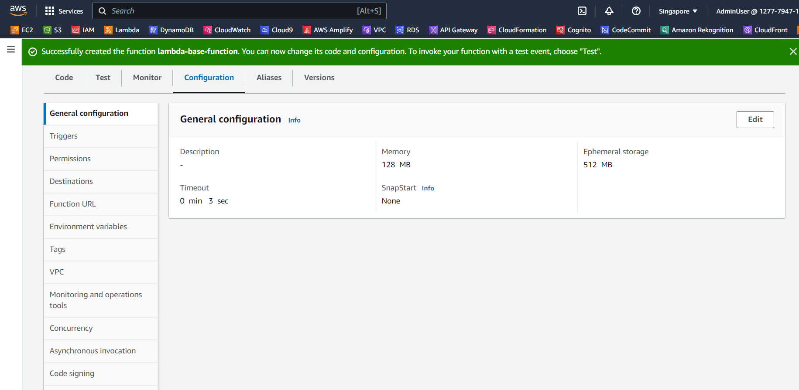
Ở trang Edit basic settings, các bạn set Timeout thành 3 min 0 sec. Sau đó click vào nút Save.
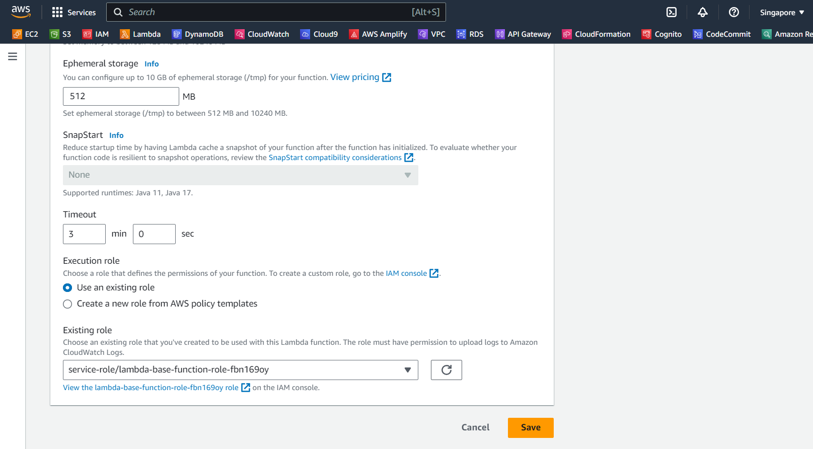
Tiếp theo, quay trở lại mục Code, chúng ta sẽ tạo test cho Lambda function bằng cách click vào nút Test.
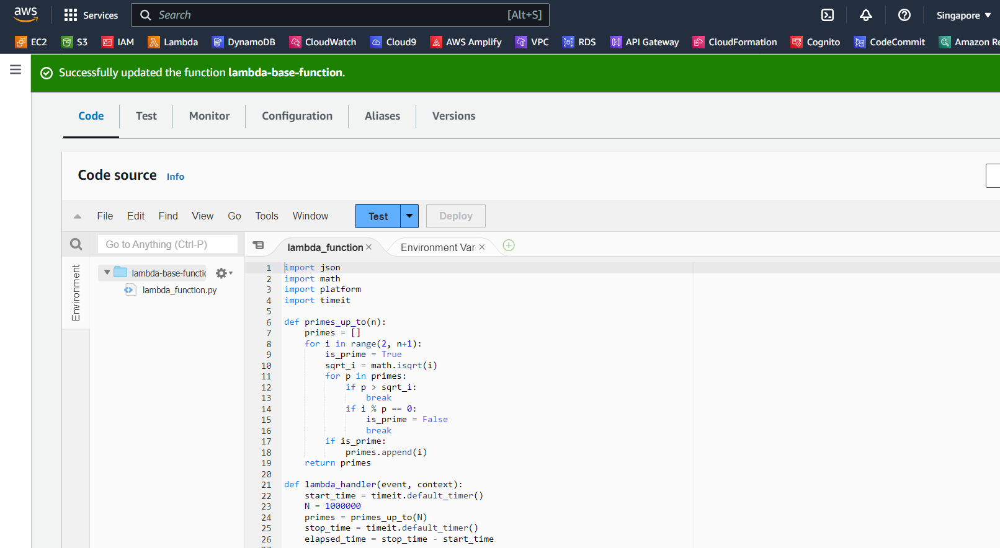
Khi cửa sổ Configure test event mở ra, đặt tên cho Event name là test1. Những mục còn lại, các bạn để mặc định. Click vào nút Save.
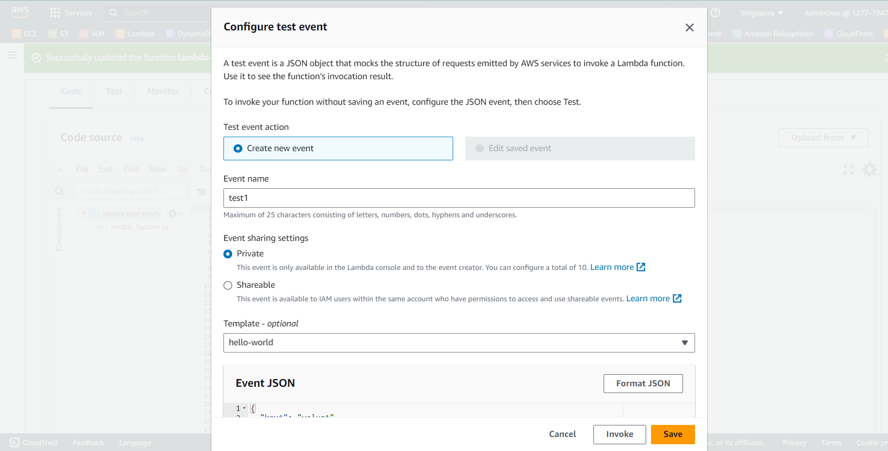
Bây giờ, chúng ta click nút Test và thấy kết quả như hình bên dưới với status code là 200.
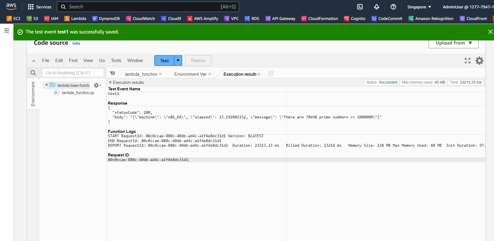
Thu nhập Metrics từ Lambda Power Tunning Tool
Đầu tiên, copy ARN của Lambda function lambda-base-function.
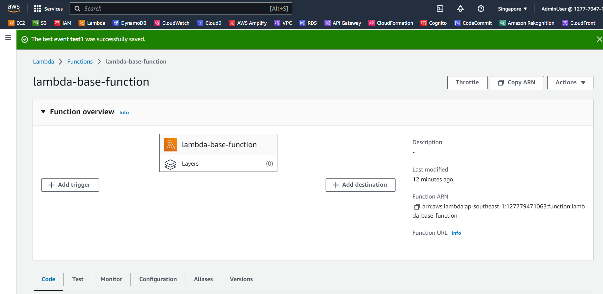
Hãy giữ trình duyệt của Lambda function này vì chúng ta sẽ tiếp tục dùng nó.
Các bạn mở trình duyệt mới và truy cập vào AWS Step Functions console. Chúng ta sẽ thấy state machine mà chúng ta tạo ở phần trước. Click chọn state machine đó.
terraform-20210621150844388600000001 = vpc(subnet, lambda, security group, role,)
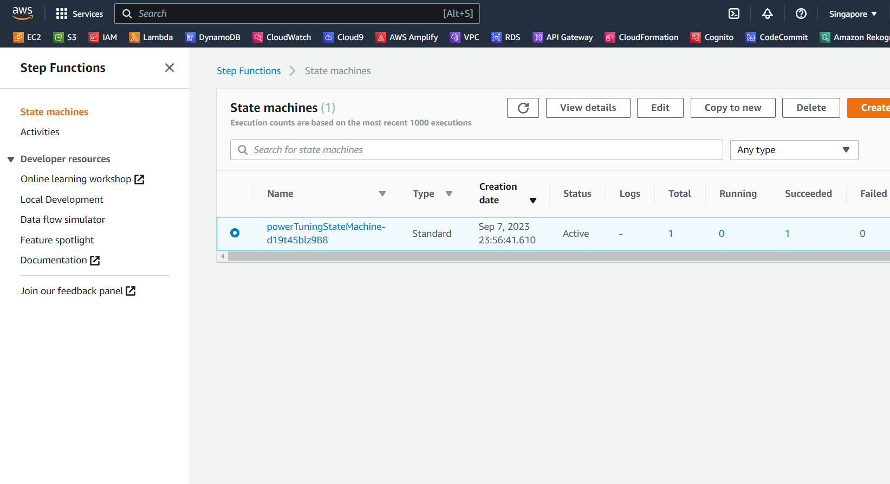

Copy đoạn script dưới đây.
{
"lambdaARN": "YOUR LAMBDA ARN HERE",
"powerValues": [128, 256, 512, 1024, 2048, 3008],
"num": 10,
"payload": "{}",
"parallelInvocation": true,
"strategy": "cost"
}
Chọn Start execution để bắt đầu phân tích function chúng ta vừa tạo. Cửa sổ Start execution mở ra, chúng ta paste đoạn script trên vào Input, hãy nhớ thay giá trị của LambdaARN bằng ARN chúng ta copy từ Lambda function trên. Sau đó click vào nút Start execution.
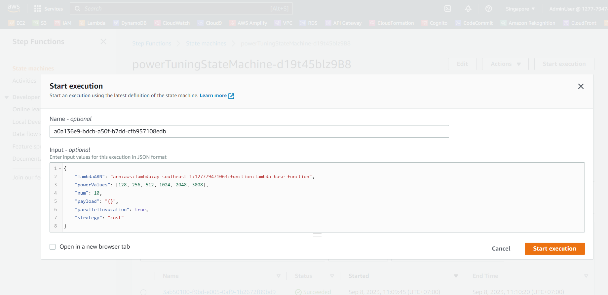
Chờ giây lát khi chúng ta thấy Excution status là Succeeded. Và lấy URL ở output tương tự như ở phần Analysis
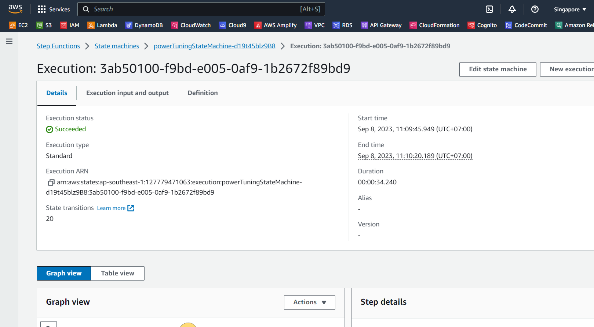
Tiếp theo, các bạn hãy chọn phần Execution input and output. Các bạn sẽ thấy ở phần output có URL ở visualization field. Copy URL đó.
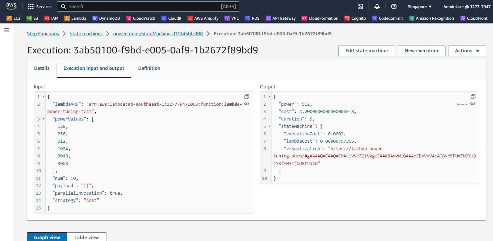
Hãy mở trình duyệt mới (Google, CocCoc, Microsoft Edge, etc) và paste URL đó vào. Các bạn sẽ nhận được như hình dưới đây.
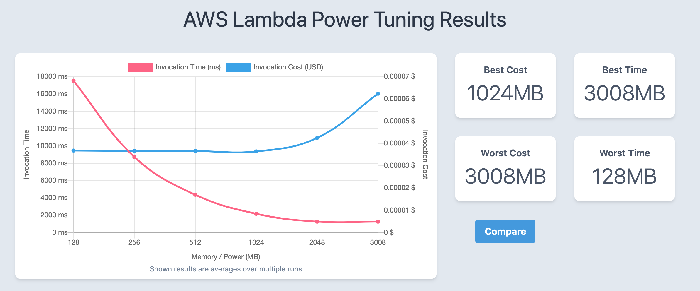
Hãy giữ nguyên trình duyệt này để dùng so sánh hiệu suất của function khác ở bước tiếp theo.